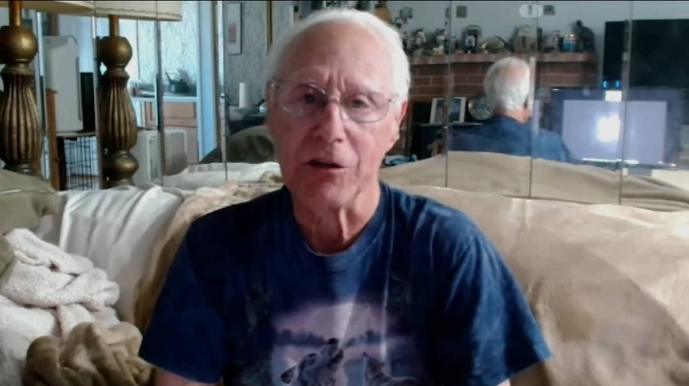
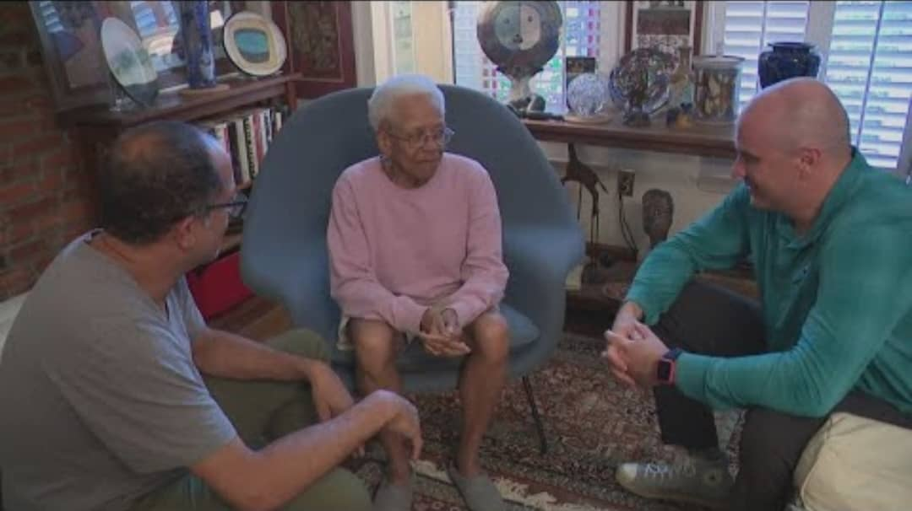

Melinda is a 72-year-old retired teacher.
One afternoon she received a call from a man who calmly claimed to be from her bank.
He sounded professional, polite, and patient just like a real banker.
He told her someone had attempted to withdraw $5,000 and that they needed to "verify her identity."
He guided her through steps that looked real… but every part of it was a trick.
By the end of the call, Melinda had unknowingly given access to her savings account.
She lost $58,600 in under 20 minutes.
She said: “He sounded exactly like the real bank man I spoke to last month. I trusted the voice.”

Johnson, 68, received a phone call at 9 PM.
The voice on the phone sounded hurt, scared and familiar.
It was the voice of his son.
At least, that’s what he thought.
The voice said:
“Dad… please… I’m in trouble… they need money right now.”
The scammer used AI voice cloning to perfectly mimic Johnson’s son.
Every breath, tone, and emotion sounded real.
Panicked, Johnson sent $9,200 through a payment app.
Twenty minutes later, his real son called from home completely safe.
Johnson realized he had been scammed by an AI-generated version of his son’s voice.
AI stole his money by stealing a voice he knew.

Martha joined an online community after her husband passed.
Soon she met a “widowed veteran” who shared beautiful photos of gardening, sunsets, and family letters.
Except none of it was real.
The scammer used AI-generated pictures and AI-written messages to build an emotional bond with her.
After months of trust, he claimed he needed money to return home.
Martha sent $27,000 nearly all of her savings.
When she tried to video call him, he always had an excuse.
Then one day… he disappeared.
Martha said: “He made me feel seen. I didn’t know a machine could pretend to love me.”
Robert got an email that looked exactly like the IRS.
It had the logo, colors, and even a real address.
A “case officer” called him to confirm the letter with a real, official-sounding voice cloned using AI.
The caller scared him:
“Your social security number is involved in some serious criminal activity. You must pay to avoid arrest.”
Terrified, Robert paid $94,500 from all his savings.
When he later called the real IRS, they said:
“We never call. We never threaten. This was a scam.”